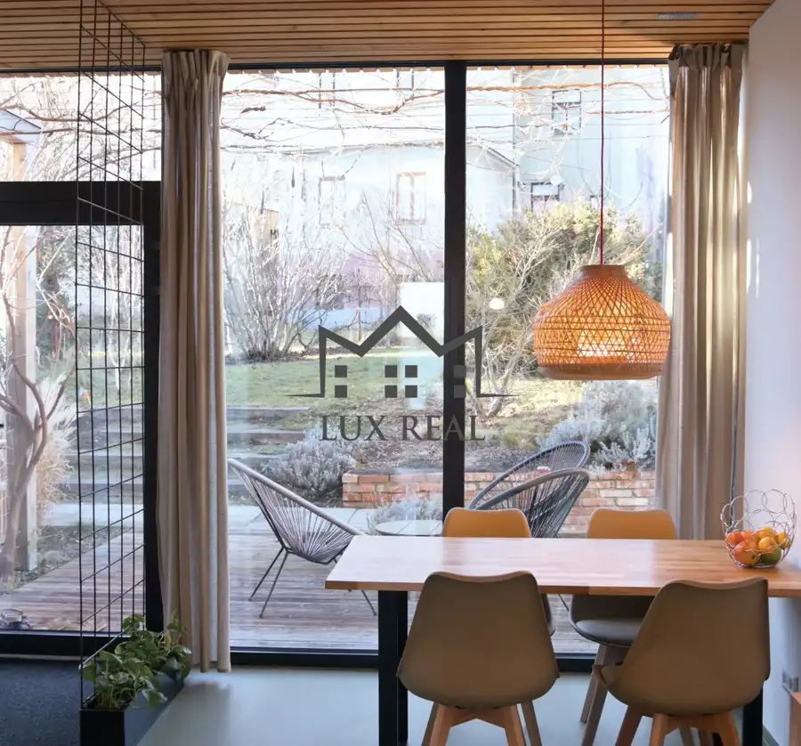
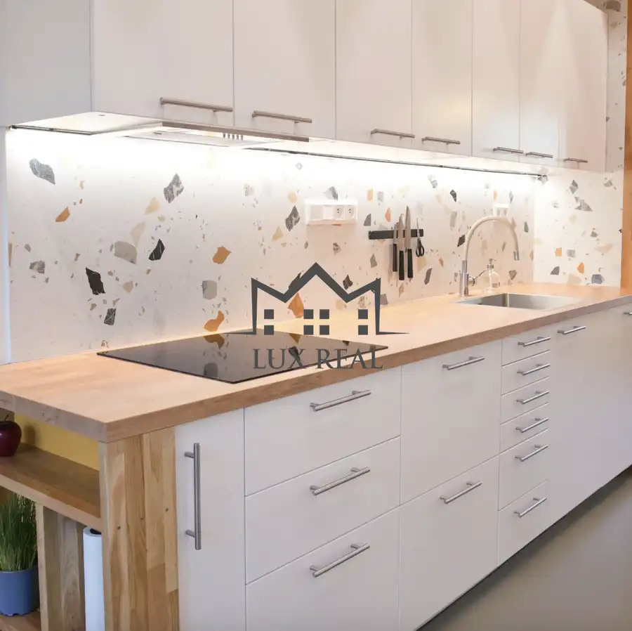
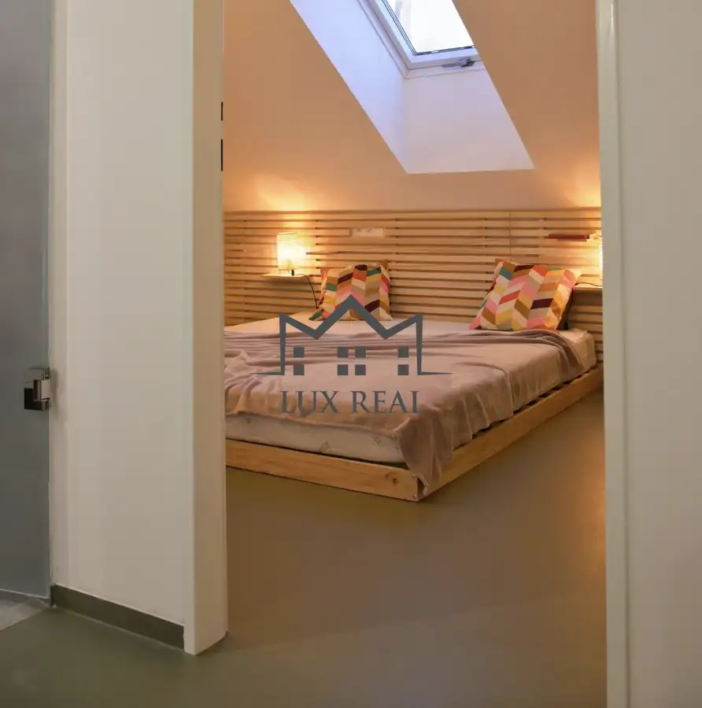
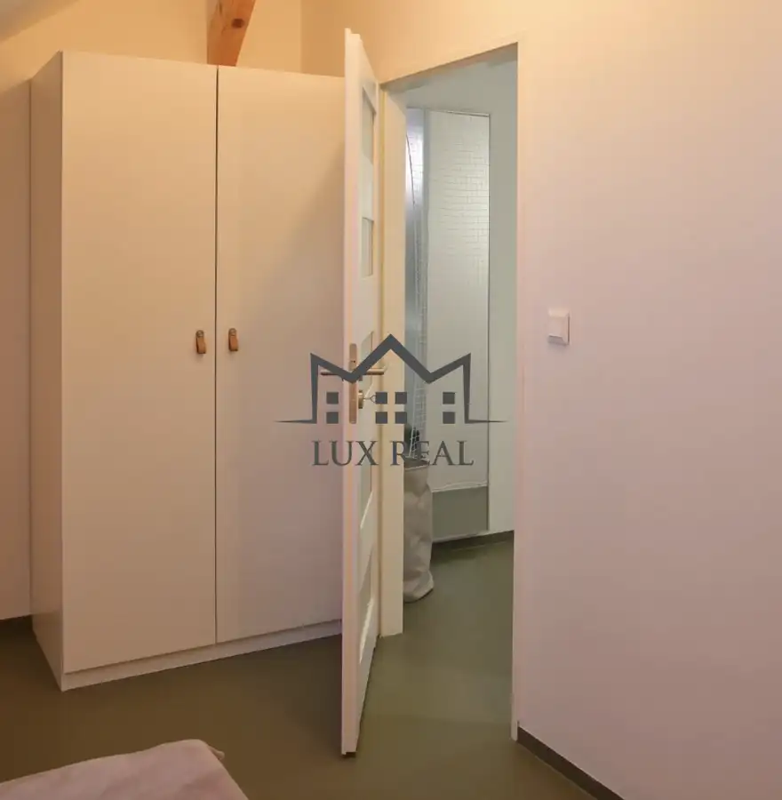
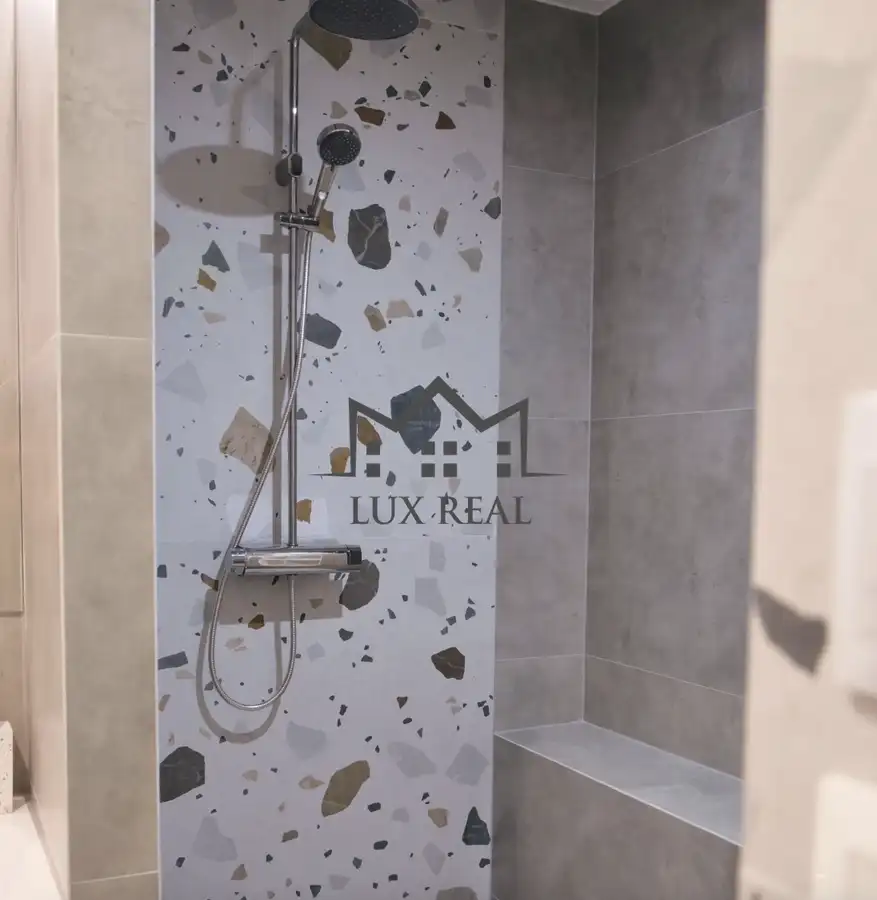
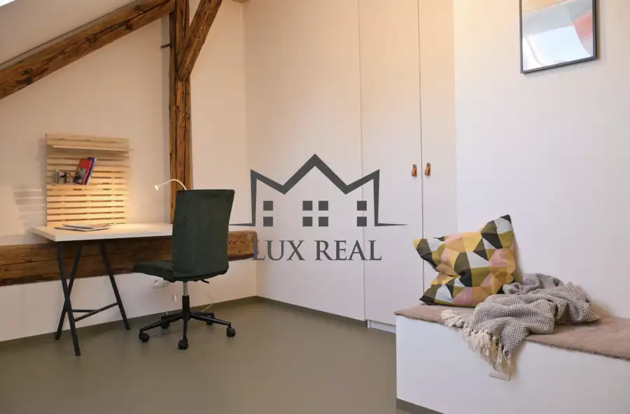
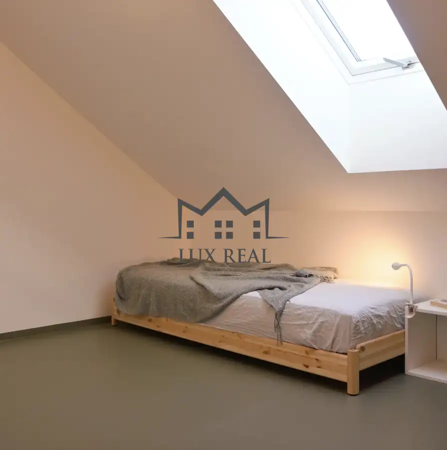
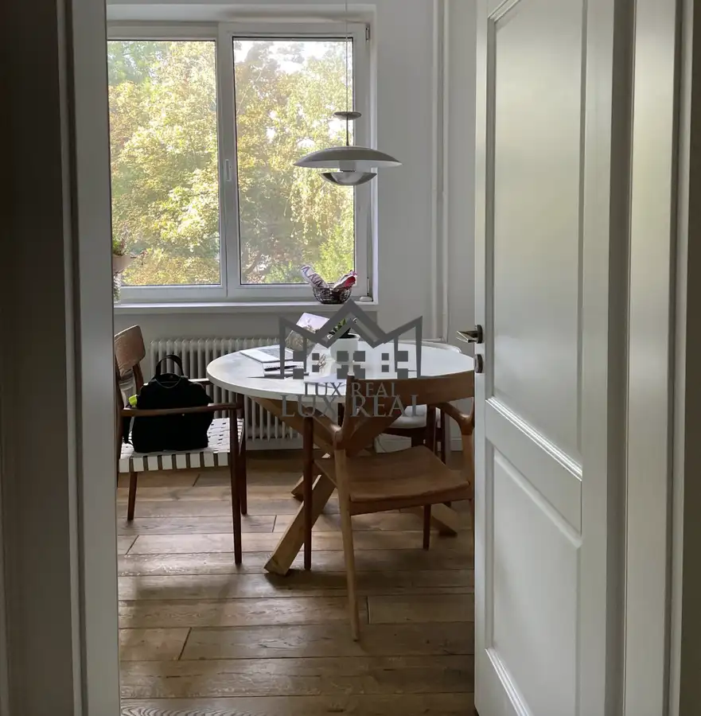
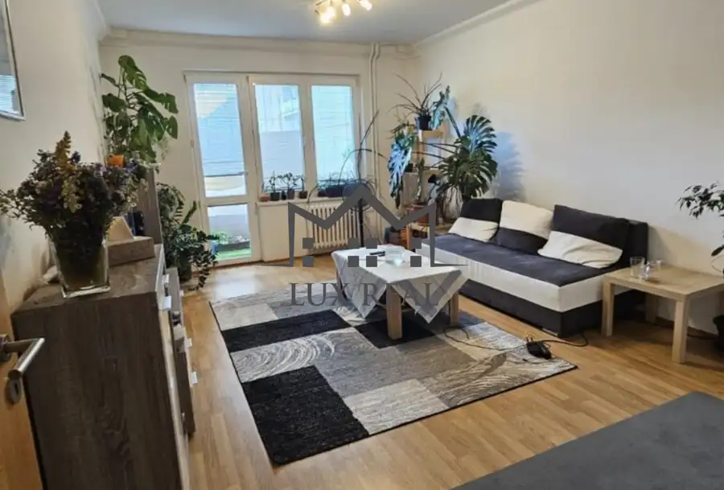
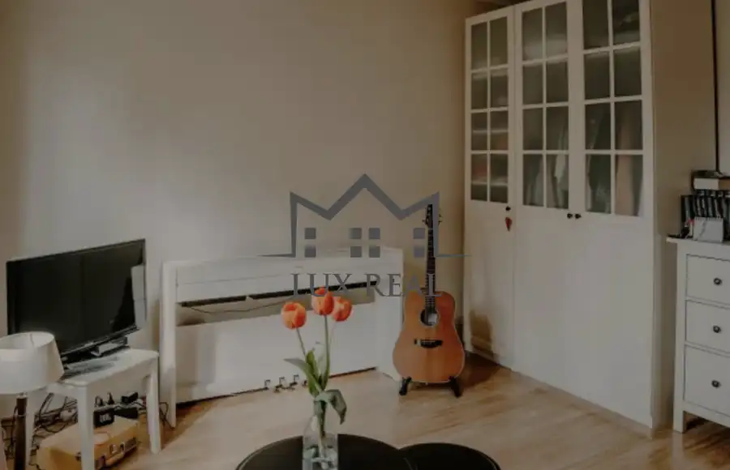

3i mezonetový byt s výhľadom do záhrady
Staré Mesto, Bratislava







- Dispozícia3-izbový
- Plocha75 m²
- StavNovostavba
O nehnuteľnosti
Ponúkame Vám na prenájom 3-izbový mezonetový byt o výmere 75m a 12m terasou sa nachádza v bývalom vinohradníckom dome, ktorý prešiel kompletnou rekonštrukciou. Pozostáva zo vstupnej haly, obývacej izby prepojenej s kompletne vybavenou kuchyňou a hlavnej spálne. Druhá izba môže slúžiť ako detská izba alebo pracovňa. V kúpeľni sa nachádza sprchový kút a toaleta, pričom ďalšia samostatná toaleta sa nachádza na prízemí. Z kuchyne sa vychádza na terasu a spoločnú záhradu.Byt je novostavba a prenajíma sa kompletne zariadený a vybavený elektrospotrebičmi (chladnička s mrazničkou, elektrická rúra, indukčná varná doska, digestor, umývačka riadu, práčka so sušičkou). Byt disponuje kvalitným systémom vetrania a chladenia, ktorý má nízke prevádzkové náklady a prispieva k celkovému komfortu počas zimných aj letných mesiacov. V kúpeľni je priestranný sprchový kút. Nehnuteľnosť ponúka všetko potrebné pre komfortné bývanie.Nachádza sa v príjemnej lokalite s dobrou dostupnosťou do okolitých mestských častí. Ponúka kompletnú občiansku vybavenosť – reštaurácie, obchody a autobusovú zastávku s priamym spojením do centra mesta. V blízkosti bytu sa nachádza park Račianske mýto s detskými ihriskami a zeleňou, Hlavná stanica a obľúbená prírodná lokalita Koliba. Cena: 1 400 € + 100 € energie. V cene je zahrnuté internetové pripripojenie a parkovanie vo dvore. Byt je určený pre 2 až 3 osoby. Žiadne zvieratá. Dostupný od 1.8.Pre viac informácií a dohodnutie obhliadky kontaktujte:Ing. Martin Gerčák MBA +421 918 685 693 martin.gercak@luxreal.sk
Parametre
- Cena vrátane energií
- Nie
- Druh
- 3 izbový byt
- Dátum zverejnenia
- 01. 10. 2026
- Stav nehnuteľnosti
- Novostavba
- Terás
- 1
- Typ
- Prenájom
- Vybavenie
- Terasa
- Úžitková plocha
- 75 m²
Kde to je


Mohlo by Vás zaujímať

BytNové 1 200 €Priestranný byt vo vyhľadávanej lokalite na prenájom Ružinov, Bratislava 3-izbový77 m²
BytNové Cena na vyžádáníPrenájom 2,5 izbového bytu v Ružinove Ružinov, Bratislava 3-izbový60 m²
BytNové Cena na vyžádáníPrenájom 1-izbového bytu blízko centra Staré Mesto, Bratislava 1-izbový28 m²3. podlažie